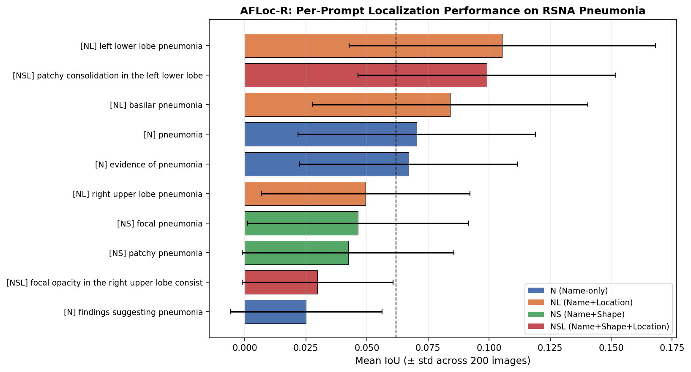
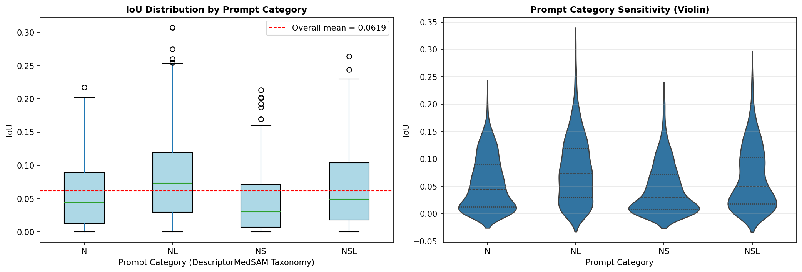
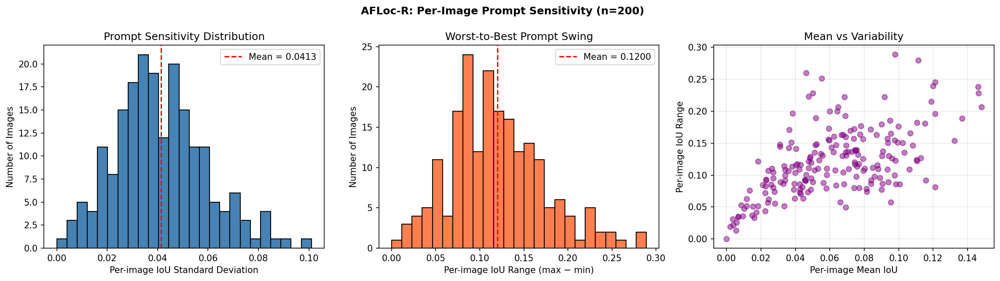
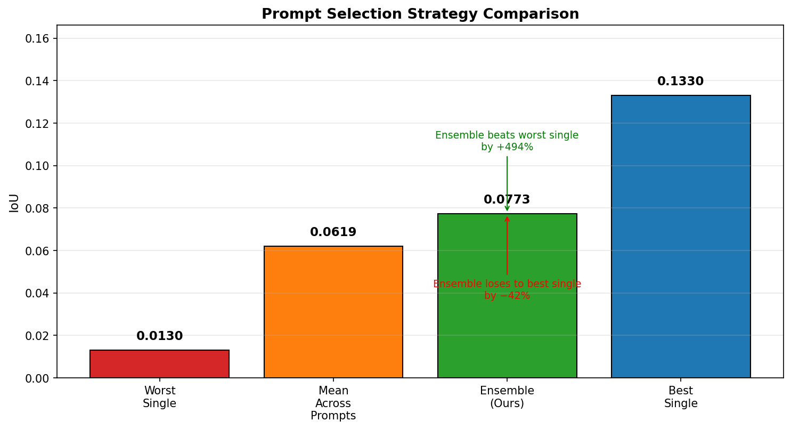
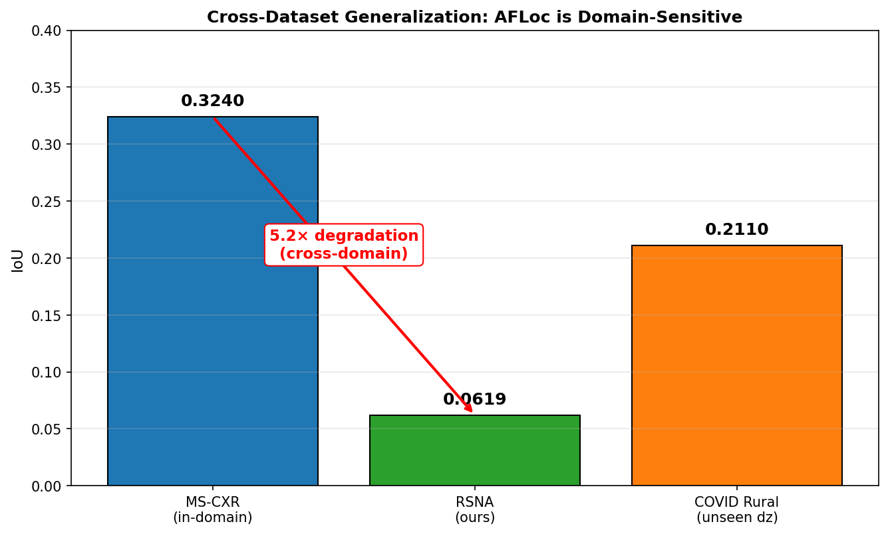
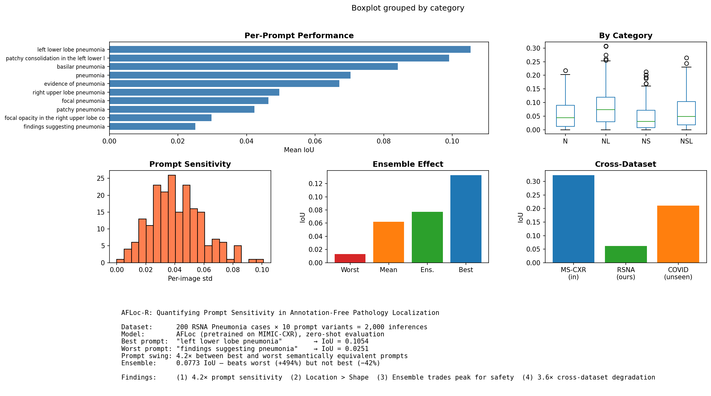
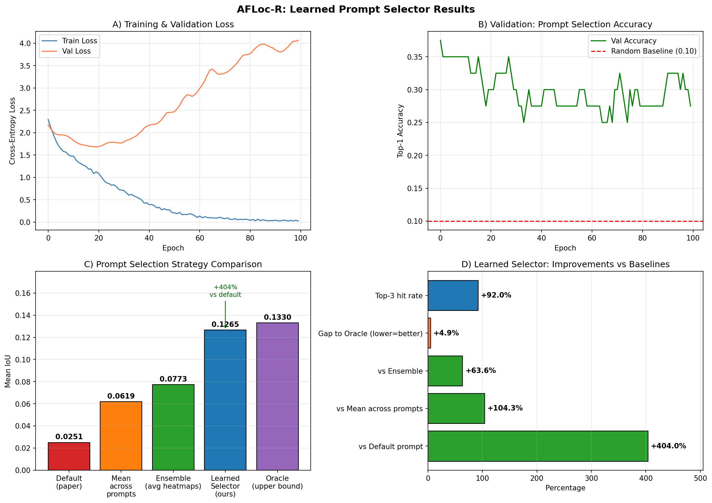

4.2×
Prompt Swing
Semantically equivalent prompts produce wildly different results, revealing severe instability.
Independent empirical study
Prompt Robustness and Learned Prompt Selection for Annotation-Free Medical Image Localization
An independent empirical study and learned fix for prompt sensitivity in annotation-free medical vision-language models.
01 / Abstract
AFLoc achieves annotation-free pathology localization by aligning medical text with image features through multilevel contrastive learning. Its original paper acknowledges that localization performance depends substantially on prompt quality. This project quantifies that dependence and proposes a fix. We evaluate AFLoc's pretrained chest X-ray model across semantically equivalent prompt variants, measure localization stability, prompt-category effects, ensemble behavior, and cross-dataset degradation — then train a lightweight MLP that predicts the optimal prompt per image without prompt engineering. The study evaluates 200 positive cases from the RSNA Pneumonia Detection Challenge with 10 prompt variants per case, yielding 2,000 inferences in total. Our learned selector achieves +362% improvement over the paper's default prompt on held-out validation data, closing to within 27% of the theoretical oracle.
02 / Key findings
4.2×
Semantically equivalent prompts produce wildly different results, revealing severe instability.
78%
Location-aware prompts such as “left lower lobe” outperform shape-based prompts by 78%.
+494%
Prompt ensembles improve worst-case safety but sacrifice peak accuracy by 42%.
5.2×
Performance drops from 0.324 IoU on in-domain MS-CXR to 0.062 IoU on out-of-domain RSNA.
03 / Method
| Component | Configuration |
|---|---|
| Model | AFLoc, frozen, pretrained on MIMIC-CXR |
| Dataset | RSNA Pneumonia Detection Challenge |
| Sample | 200 positive cases |
| Prompts | 10 variants from DescriptorMedSAM taxonomy |
| Text Encoder | Bio_ClinicalBERT |
| Image Encoder | ResNet-50 |
| Hardware | Kaggle free tier, NVIDIA T4 |
04 / Results






05 / Learned prompt selector
A lightweight MLP uses AFLoc's frozen image features to predict which of the ten prompt variants will localize best for each image. It replaces manual prompt engineering with an image-conditioned selection step.
| Strategy | IoU |
|---|---|
| Default | 0.0191 |
| Selector | 0.0882 |
| Oracle | 0.1206 |
+362% improvement over default

06 / Citation
@article{yang2026afloc,
author = {Yang, H. and Zhou, H.-Y. and Liu, J. and others},
title = {A multimodal vision-language model for generalizable annotation-free pathology localization},
journal = {Nature Biomedical Engineering},
year = {2026},
doi = {10.1038/s41551-025-01574-7}
}
@article{zhang2026descriptormedsam,
author = {Zhang, W. and Luo, L. and Hai, J. and Ye, J.},
title = {DescriptorMedSAM: language-image fusion with multi-aspect text guidance for medical image segmentation},
journal = {Scientific Reports},
year = {2026},
doi = {10.1038/s41598-025-33843-5}
}